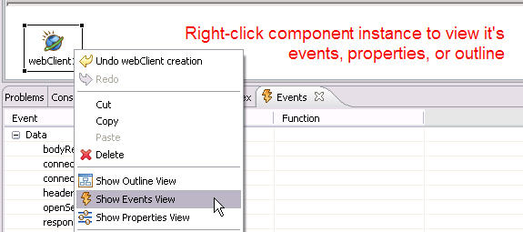
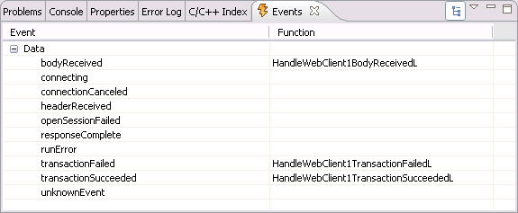

This example shows how to use the Carbide.c++ UI Designer for S60 to define the UI of an application and to implement the "real work" in the generated code.
The application consists of two screens. The main screen prompts the user to to initiate a search and displays the list of search results. The second screen displays the Yahoo! provided thumbnail image of the selected result.
Choose a link to read the following topics:
The WebClient component is a non-UI object that implements HTTP GET requests.
Since web requests can take a bit of time to complete, they are not handled synchronously, i.e. as simple function calls. Rather, a function call is made to initiate a request. That function call returns immediately. Callbacks are made to notify the caller of the ongoing progress of the request and to signal completion.
The web client component uses the MWebClientObserver callback interface to make callbacks to the client. The UI Designer then layers a set of component events on top of that interface, delivering notifications to application-defined handler functions for selected events.

Figure 2 - Events view showing event handlers
Because this application is handling HTTP in a very simple way, we only respond to events in order to collect the incoming HTTP data, and to receive notification when the request is complete. You can view the event information by selecting the webClient instance (Figure 1) , right-clicking and choosing "Show Events View". The handled events have handler function names in the right-hand column (Figure 2).

Figure 2 - Events view showing event handlers
Details of the Yahoo! Image Search API may be found at http://developer.yahoo.com/search/image/V1/imageSearch.html. In brief, it uses a REST-style query API and returns results as XML. In this example, we use the CYahooSearchModel class to encapsulate XML parsing logic and maintaining the list of results. This class has no user interface and was manually written. It provides an example of separating application specific data handling, showing how it may be kept separate from the user interface portion of the application.
On the next page, we will show how all these components are put together to create the application.